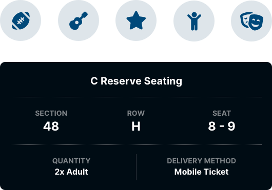
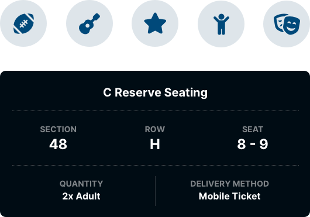
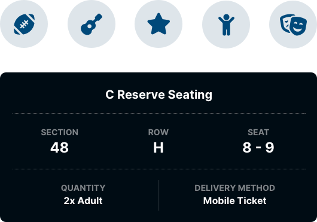

Ticketek has been around for 40 years and has been selling tickets to events online since 1997. Ticketek sells over 23 million tickets to more than 20,000 events each year including concerts, sports, theatre, musicals, festivals, exhibitions, experiences, and family events. It was time for this well known icon to not only get a new look but a responsive website as well.
The Solution
A whole new look
Ticketek has had the same design for the last 7 years. This update required looking at the entire user journey. From the initial step of finding information about an event to actually sitting in the stadium.
Ticketek Site
My goal here was to give them a fresh experience that made purchasing a lot smoother. On average customers visit the site only 1.2 times a year so making sure the design is something that is easy to use every time they visit was paramount. This was achieved with consistent placement of primary actions, a clearer information hierarchy, and adding negative space making pages are easier to scan.
Event
Ticket Offer
Checkout
Confirmation
Another objective was to make Ticketek stand out from its competitors. The place where this shines is the new home page. I went with bold portrait imagery, something nobody else is doing. This has a continuity with posters for events in real life, which shows that Ticketek has a real understanding of live entertainment.
A core part of the purchasing process for customers is the venue map. They want to know where they will be sitting, how far away from the stage, is it an aisle seat, and plenty of other things. With venue maps now being the primary focus of product pages it was a good time to update the styling.
I wanted to differentiate Ticketek’s maps from competitors while also feeling at home with the maps the venue owners provided. That’s where the precinct style map comes in. Not only do customers get an understanding of their seating, they can see other features of the venue like gates, parking, nearby roads, and toilets. Trees are even added the make a connection with the physical space the venue is located in.
Mobile App
I introduced a major redesign of the Tickets tab. The original design featured large image tiles representing events, a user would tap on one and it would bring up a list of tickets. Users found this confusing as the content of this tab looked the same as the Featured Events tab.
The new design itemises the tickets for each event so it’s clearly differentiated from the rest of the app. Each ticket features actions that a user can take, the driving force for this was the inclusion of Ticket Sharing in the app.
What you see here is a continuation of the work done for Marketplace. I took the design system created there and evolved it. Both platforms should be their own brands but still feel part of the same family.

Just like Marketplace I was the sole designer on this project. As you can imagine, getting to shape a platform as large as Ticketek by myself was an exciting challenge! This really gave me the opportunity to branch out in to all areas of Product Design. I worked with the business to help define the product, drew up IA and wireframes, created prototypes, crafted a vast design system and applied that to a lot of screens, and worked with developers on implementation detail.


 
